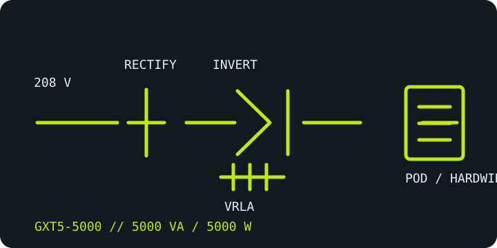

[ ONLINE DOUBLE-CONVERSION UPS // IDENTIFIED MODEL ]
Liebert GXT5-5000MVRT4UXLN
Vertiv's 5000 VA / 5000 W, 208 V rack/tower online UPS. This high-capacity SKU uses hardwired power connections and selectable/configurable output arrangements; it is not a plug-in 120 V UPS.

ARCHIVAL IDENTIFICATION: Capture the UPS suffix, installed output distribution module (POD), battery cabinet, output voltage and installed IntelliSlot card; these determine the actual field configuration.
Exact model specifications
| Catalog category / topology | Online UPS — double-conversion, pure-sine-wave output. |
|---|---|
| Electrical ratings | 5000 VA / 5000 W; 208 V AC input, with output voltage/configuration selected for the installation. Confirm allowable output wiring and derating in the model guide. |
| Transfer behavior | 0 ms inverter transfer during normal online operation. Bypass operation and transition behavior are mode- and installation-dependent; consult the installer/user guide. |
| Receptacles / connectors | Input and base output use hardwired connections; receptacles, if fitted, are supplied by the selected compatible Power Output Distribution (POD). No single receptacle mix should be assumed from this UPS SKU alone—record the POD's own model and outlet labels. |
| Battery / runtime | Internal sealed lead-acid battery system with compatible external battery-cabinet options. Runtime depends on load and configuration; use Vertiv's model-specific runtime tables and record battery age/condition. |
| Communication | LCD monitoring/control and IntelliSlot management-card capability; identify the card actually installed before assuming network/SNMP availability. |
| Compatibility / safety | Output may be configured for different voltages and POD arrangements. Have a qualified electrician verify phase, voltage, neutral/ground, branch protection and load compatibility before commissioning; follow the exact manual and POD instructions. |
Manufacturer references
- Vertiv — GXT5-5000MVRT4UXLN product pageManufacturer record for the 5 kVA / 5 kW 208 V model.
- Vertiv — GXT5 208 V installer/user guideManufacturer installation, operation, battery and configuration instructions; verify applicable model and revision.